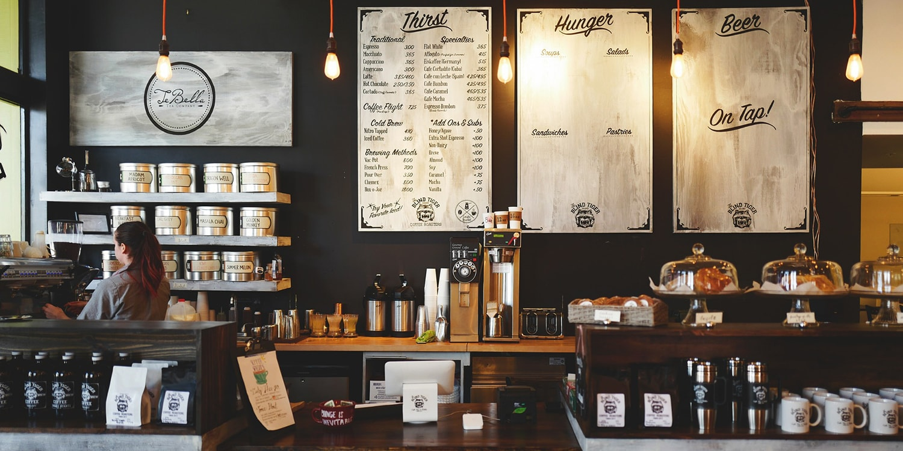

TRAVEL DIALY 旅先で出会ったカフェテリア
/ San Francisco,CA

おいしい飲み物と食べ物はもちろん、一息つける落ち着いた空間がいつでも暖かく迎え入れてくれます。今日は何を食べようかな？メニューを見て悩む時間もまた楽しいひとときです。のんびい悩んでいると周りの人の迷惑になるかも…と思ってしまうときは混雑する時間帯を避けていくことにしています。
というのも、店員さんが忙しくしていないときであれば、こちらがちょっと不慣れな様子でも優しく対応してもらえることが多いからです。メニューについてアレコレ聞いてみるのも、思わぬ発見があって楽しめます。